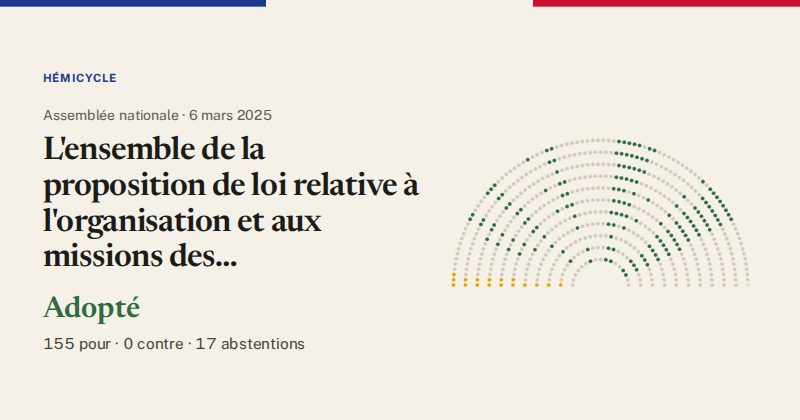

Assemblée nationale · scrutin n°912 · 6 mars 2025
L'ensemble de la proposition de loi relative à l'organisation et aux missions des professionnels de santé, vétérinaires, psychothérapeutes et psychologues professionnels et volontaires des services d'incendie et de secours (première lecture).
Adopté
155pour
0contre
17abstentions

Le vote de chaque groupe
| Groupe | Pour | Contre | Abst. | Membres |
|---|---|---|---|---|
| LFI-NFP | 0 | 0 | 17 | 71 |
| GDR (communistes) | 4 | 0 | 0 | 17 |
| Écologiste et Social | 10 | 0 | 0 | 38 |
| Socialistes | 17 | 0 | 0 | 66 |
| LIOT | 3 | 0 | 0 | 23 |
| Ensemble pour la République | 15 | 0 | 0 | 94 |
| Démocrate (MoDem) | 32 | 0 | 0 | 36 |
| Horizons | 13 | 0 | 0 | 33 |
| Droite Républicaine | 2 | 0 | 0 | 47 |
| UDR | 5 | 0 | 0 | 16 |
| Rassemblement National | 54 | 0 | 0 | 124 |
| Non-inscrits | 0 | 0 | 0 | 11 |